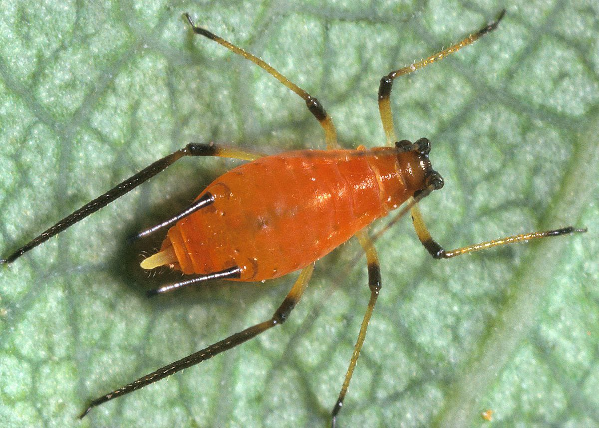
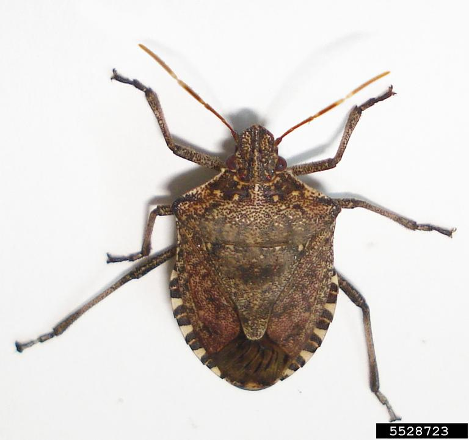
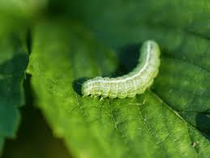

Aphids
- Small, soft-bodied insects.
- Typically green, black, or yellow.
- Feed on plant sap.
- Can transmit plant diseases.
- Often found in colonies on plants.

Brown Stink Bug
- Known for their unpleasant odor when disturbed.
- Brown color with a shield-like shape.
- Feed on a wide range of plants.
- Can cause damage to crops.
- Adult and nymph stages are visible.

Codling Moth
- Common pest of apple and pear trees.
- Larvae feed on fruit, causing damage.
- Adults are small, with grayish-brown wings.
- Can cause significant crop losses.
- Control methods include traps and pesticides.

Caterpillar
- Larval stage of butterflies and moths.
- Usually feed on leaves and other plant material.
- Can be pests in gardens and crops.
- Come in various colors and patterns.
- Transform into pupa (chrysalis) before becoming adults.

Leaf Roller
- Larvae roll or fold leaves to form a protective shelter.
- Can cause significant damage to crops.
- Feed inside the rolled leaves.
- Control methods include insecticides and natural predators.
- Adults are small moths with narrow wings.

Ladybug
- Small, brightly colored beetles.
- Known for their red or orange bodies with black spots.
- Feed on aphids and other small pests.
- Beneficial for gardens and crops as they control pests.
- Adults and larvae are both predatory.